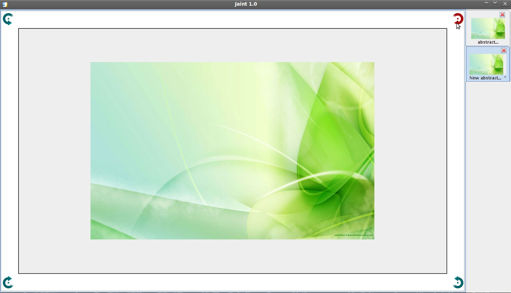

Rotation libre
Pour effectuer une rotation libre de l'image il suffit de cliquer sur une des quatres icones situées aux coins de l'image, et de maintenir le clique gauche tout en déplaçant la souris
